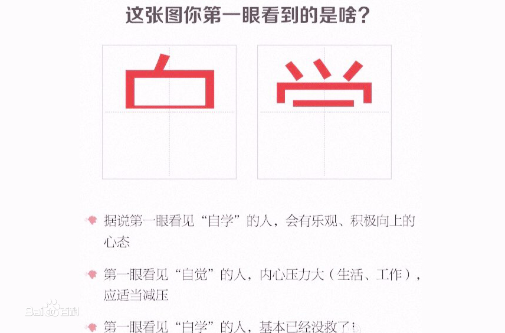
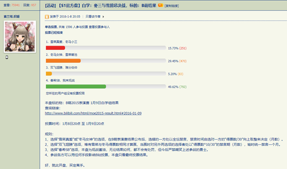

其实世上本没有白学家，研究得多了，也便成了白学家。

白学是什么学？是人类的新兴研究领域吗？不知，问友，友闻白学，怒发冲冠，吸烟一口，淡道：“知识沃土，渣男福音，看见白学家，打死就好了。
白学说到底，其实便是观众们对于男主选择谁的党派之争。
当支持不同主角的人相互讨论时，由于爱好者基数大从而导致其中有大量素质不一的人之时，喜爱、支持各角色的爱好者之间就容易出现冲突，发生不再仅仅止步于对剧情发展的讨论，而是激烈的争执甚至是对角色及讨论者的人身攻击，互相视对方为异端，此时我们可称呼这一群体性行为为“党争”。 ——萌娘百科
党争无处不在，而“冬马党”和“雪菜党”之间的腥风血雨写成书厚度可以和《资本论》一较高下。
如果你觉得我是在夸大其词，一个听都没听说过的白学这么能跟我大《资本论》同台竞技？
可能是理智遮蔽了你的想象力，在有史以来最激烈的党争之战中，由于最终票数差距过于巨大，“雪菜党”的白学家被处以一年4个月的禁言惩罚。（禁言时间由选对一方的“得票数/30”向上取整来决定（月数））。

说到史上最著名的白学家，那当然是我们有名的周树人先生了。（滑稽）
鲁迅先生，请问你对白学有什么独到的理解和看法吗？
咳咳咳，说到这大家应该大概能够理解对于白学的定义了。
白学不仅仅是个梗，更是一门学问，越去深入的研究白学越能明白一些人生道理。它不是简简单单的冬三雪碧便能概括得了的。
你知道 白学·世界名画 吗？
咳咳，，，
即使是当下热门的 Darling in the FranXX 也在致敬我们伟大的白学。
所以，错的不是肥宅，而是这个世界。
最后一首《届かない恋》献给在座的各位。
相关歌曲推荐：
以下歌曲不区别歌手，请各党派自行斟酌选择！！(可以做成网易云链接)
-届かない恋
-White album
名句欣赏：
ホワイトアルバムなんて知らない。だって、もう何も歌えない。届かない恋なんてしない。だって、もう人を愛せない。
白色相簿什么的已经无所谓了。因为已经不再有歌，值得去唱了。传达不了的恋情已经不需要了。因为已经不再有人，值得去爱了。
——《白色相簿2》终章官方宣传词
「ホワイトアルバムの季節」が、また、やってきた。
又到了白色相簿的季节。
——冬马和纱
なんでそんなに慣れてんだよっ！
为什么你这么熟练！
——冬马和纱
あたしが、先だった……先だったんだ……キスしたのも、抱き合ったのも。そいつのこと好きになったのも。
是我，是我先，明明都是我先来的……接吻也好，拥抱也好，还是喜欢上那家伙也好。
——小木曾雪菜
どうしてこうなるんだろう…初めて、好きな人が出来た。一生ものの友だちができた。嬉しいことが二つ重なって。その二つの嬉しさが、また、たくさんの嬉しさを連れてきてくれて。夢のように幸せな時間を手に入れたはずなのに…なのに、どうして、こうなっちゃうんだろう…
为什么会变成这样呢……第一次有了喜欢的人。有了能做一辈子朋友的人。两件快乐事情重合在一起。而这两份快乐，又给我带来更多的快乐。得到的，本该是像梦境一般幸福的时间……但是，为什么，会变成这样呢……
——小木曾雪菜
参考文献：
白学——萌娘百科